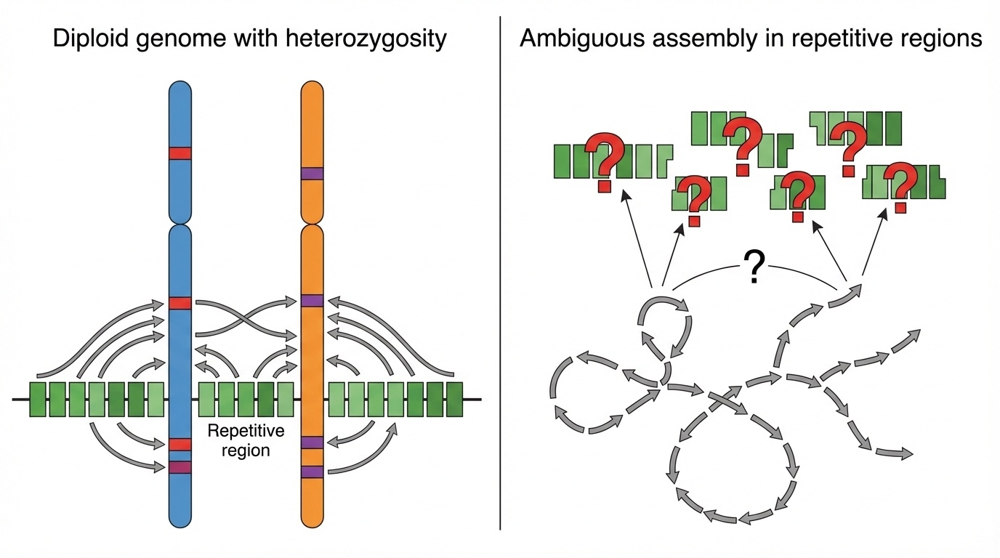
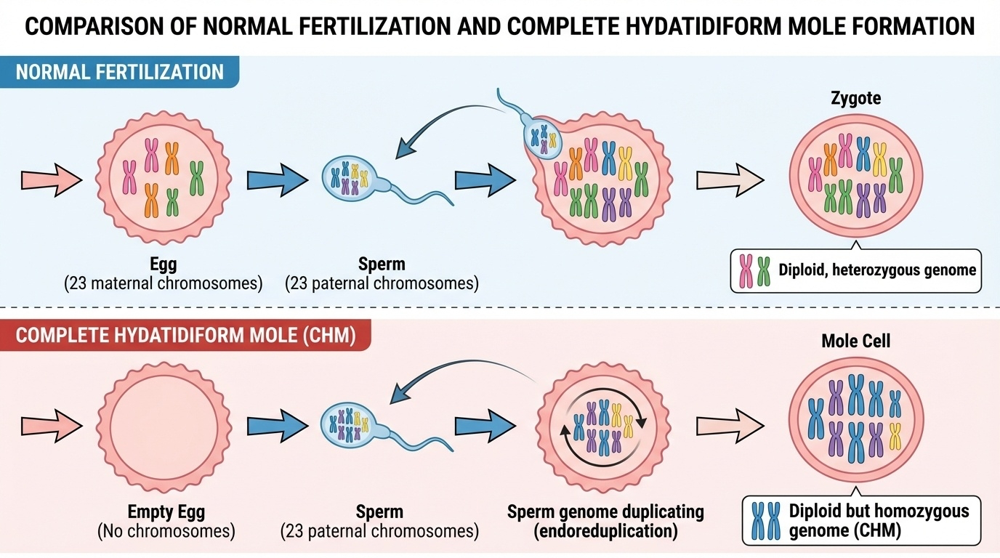
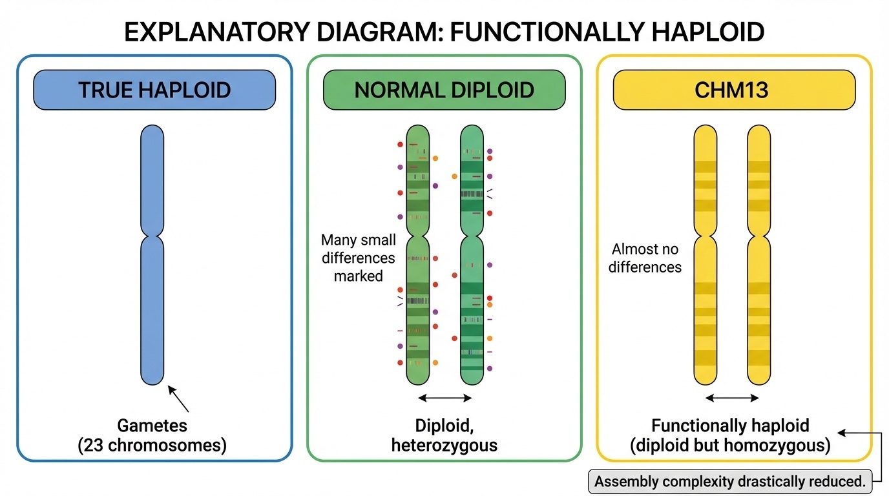
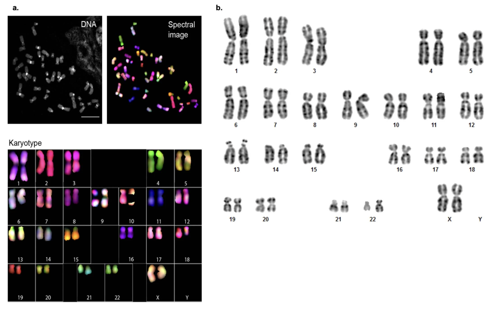
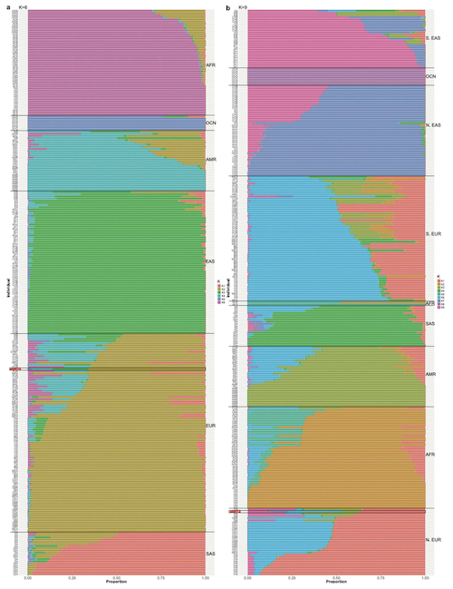

BSMS205 · Genetics
The CHM13
Chapter 3 · Part I · The Human Genome
Welcome back to BSMS two oh five Genetics. Last time we walked through the Telomere-to-Telomere project and how it finally closed the eight percent of the genome that the original Human Genome Project could not. Today we zoom in on the strangest part of that story — the cell line that made it possible. Its name is CHM thirteen. It came from a failed pregnancy. It has only one parent's DNA, duplicated. And without it, the first complete human genome would still be a dream. By the end of this hour you will understand why such an unusual biological accident turned out to be the perfect starting material for sequencing biology's most ambitious target.
A puzzle to start with
Why couldn't they justa normal person ?
Here is the puzzle I want you to sit with. The T2T project's goal was to produce the first complete reference of a human genome. So the obvious choice would be to take blood from a volunteer, extract D N A, sequence it, and assemble. That is what GRCh thirty-eight tried to do. But the T2T team did not pick a normal person. They picked a cell line derived from a very rare and very specific kind of pregnancy loss. Why on earth would you choose that over a healthy donor? The answer is one word — heterozygosity — and we will spend the next hour unpacking why that one word changes everything.
The two-puzzle problem
Normal diploid
Two different chromosome copies
~4–5 million heterozygous variants
Repeats: which copy did the read come from?
What an assembler wants
Both copies identical
No ambiguity in repeats
One puzzle, not two interleaved ones
Genome assembly is essentially a giant jigsaw puzzle. You shred the DNA into millions of fragments, sequence each one, and then a computer pieces them back together by finding overlaps. In a normal person, you have two slightly different versions of every chromosome — one from mom, one from dad — and they differ at millions of positions. For most of the genome this is fine. But in repetitive regions, the same sequence appears hundreds of times, and now the assembler cannot tell which fragments came from mom's copy and which came from dad's. It is like trying to assemble two nearly identical jigsaw puzzles whose pieces have been mixed into the same box. CHM thirteen solves this by having only one puzzle.
Where the gaps lived
151,000,000
base pairs of unknown sequence in GRCh38
Mostly in repetitive regions
Centromeres · rDNA arrays · segmental duplications
Heterozygosity made them impossible to assemble
Just to make this concrete: GRCh thirty-eight, the reference genome we used for two decades, contained roughly one hundred fifty-one million base pairs that were simply listed as unknown — strings of N's where letters should have been. Those were not random scattered gaps. They were concentrated in the most repetitive parts of the genome. Centromeres. Ribosomal DNA arrays. Big segmental duplications. The technology of the early two thousands could not solve repeats, and heterozygosity made it worse. To finish those regions, the T2T consortium needed a fundamentally different starting material.
Roadmap for today
Why heterozygosity breaks assembly
What is a complete hydatidiform mole
"Functionally haploid" · the magic property
The hTERT trick · making cells immortal
Quality control · ancestry · ethics
Why CHM13 specifically · and its limits
Summary & what comes next
Here is how we will move today. First, the assembly problem — why heterozygosity is the central enemy. Second, the biology behind CHM thirteen — what a complete hydatidiform mole actually is. Third, the key concept of functionally haploid, which sounds like an oxymoron but is the whole point. Fourth, the h T E R T immortalization trick. Fifth, the quality control, the ancestry analysis, and the ethical considerations of using a mole-derived line. Sixth, why CHM thirteen specifically out of all the available cell lines, and what its limits are. Then we wrap up and bridge to chapter four on the pangenome. Let's begin.
§ 1
Why Heterozygosity
Let's spend a few minutes on the core technical problem. If you understand this, the rest of the chapter is just consequences.
One difference per thousand bases
1 / 1,000
bases differ between maternal and paternal copies
= about 0.1% of the genome
= ~4–5 million heterozygous variants
= the normal, healthy human state
Some numbers to anchor your intuition. Between any two human chromosome copies — your mom's and your dad's — about one base pair in every thousand differs. That is zero point one percent of the genome. Across three billion base pairs, that adds up to roughly four to five million heterozygous positions per individual. This is normal. This is healthy. This is why siblings look similar but not identical. It is also exactly the level of difference that makes assembly of repetitive regions extremely hard.
Where the read came from · matters
Sequencing breaks DNA into millions of fragments
Computer reassembles by finding overlaps
In repeats: many fragments look nearly identical
Maternal? Paternal? Cannot tell → gaps or errors
Step through the assembly mechanically. You shred the DNA into millions of small fragments and read each one. The computer then walks through fragments looking for overlaps, like a giant overlap-puzzle solver. In unique regions of the genome this works beautifully. In a repetitive region — say, a centromere with a two kilobase sequence repeated fourteen hundred times — fragments from many different copies all look nearly identical. The assembler cannot tell which copy a fragment belongs to. Worse, it cannot tell whether it came from the maternal or the paternal version of that centromere. The result is either gaps or, even worse, a wrongly collapsed assembly that hides real biological structure.
The puzzle problem · in one figure

Figure 1. Why heterozygosity breaks genome assembly. Reads from two similar-but-not-identical chromosome copies cannot be confidently assigned in repeats — leaving gaps or errors.
Here is the picture from the textbook. Two chromosome copies on top, fragments below, and an assembler trying to figure out which fragment goes where. In unique regions there are enough distinctive variants to anchor each fragment to the correct copy. In repetitive regions everything looks the same — so the assembler either gives up and writes a gap, or it merges the two copies into a single wrong consensus. This single picture is why the centromeres in GRCh thirty-eight were essentially blank.
The GRCh38 compromise
Built from BAC clones · 100–200 kb pieces in bacteria
Pieces came from multiple individuals
Result: a mosaic of haplotypes
~151 Mb of N's in repetitive regions
Mosaic + heterozygosity + short reads = unfinishable.
How did the original Human Genome Project deal with this? Imperfectly. They built GRCh thirty-eight from bacterial artificial chromosomes — large pieces of DNA, about one hundred to two hundred kilobases each, cloned into bacteria and then sequenced. Those B A C s came opportunistically from multiple donors, so the resulting reference is actually a mosaic of haplotypes from different people stitched together. That helped reduce some heterozygosity locally, but it introduced its own structural inconsistencies. And in the worst regions — centromeres, ribosomal arrays, segmental duplications — the technology of the day simply gave up and recorded N's. The T2T team realized: to finish those regions, you cannot patch the strategy. You need a fundamentally different starting material.
§ 2
What Is a
Now let's step away from sequencing for a moment and into reproductive biology. To understand CHM thirteen, you need to understand the very rare event that produced its DNA. This is biology that does not get taught in most genetics classes, but it is essential here.
Normal fertilization · 23 + 23
Egg contributes 23 chromosomes from mom
Sperm contributes 23 chromosomes from dad
Zygote: diploid , 46 chromosomes
Two different versions of every chromosome
Quick refresher on normal fertilization. The egg carries twenty-three chromosomes from the mother. The sperm carries twenty-three from the father. They fuse, and the resulting zygote is diploid — forty-six chromosomes, paired up. Crucially, mom's chromosome one and dad's chromosome one are similar but not identical. They differ at millions of positions. This is the heterozygosity we have been talking about, and it is genetically healthy. It is also the reason the assembler struggles.
What goes wrong in a CHM
Egg loses its nucleus — no maternal DNA
Sperm fertilizes the empty egg
Sperm DNA duplicates itself (endoreduplication)
Result: 46 chromosomes — but all from dad
Now the rare accident. In a complete hydatidiform mole, something goes wrong before fertilization. The egg loses its nucleus — so no maternal DNA is present at all. A sperm enters this essentially empty egg, but a single set of paternal chromosomes is not enough to support development. To compensate, the sperm's DNA duplicates itself through a process called endoreduplication. The single set of twenty-three paternal chromosomes replicates, producing forty-six chromosomes. The cell now has a normal chromosome number, but every single chromosome is a copy of a paternal chromosome. There is no maternal DNA anywhere.
Normal vs CHM · in one figure

Figure 2. Normal fertilization (top) creates a diploid heterozygous genome. A complete hydatidiform mole (bottom) is diploid but homozygous — two identical paternal chromosome sets.
Here are both processes side by side. On the top, normal fertilization — twenty-three from mom, twenty-three from dad, paired into a heterozygous diploid. On the bottom, the CHM pathway — empty egg, single sperm, duplicated paternal DNA, resulting in two identical paternal chromosome sets. Both end up with forty-six chromosomes, but the genetic content is profoundly different. One has two distinct copies of each chromosome. The other has two identical copies.
Why 46,XX · not 46,YY
Most CHMs have 46,XX karyotype
Sperm carrying X duplicates → XX
Or two X-bearing sperm fertilize one empty egg
YY is not viable — humans need at least one X
CHM13 is 46,XX · all from one father
A small but important detail. Most complete hydatidiform moles have a forty-six X X karyotype. This happens either because a single X-bearing sperm enters the empty egg and its DNA duplicates, or because two X-bearing sperm both enter the empty egg and fuse. Y Y combinations almost never persist because human cells need at least one X chromosome to survive. CHM thirteen specifically is forty-six X X, with all chromosomes derived from a single father's genome. That is also why, in the T2T project, the Y chromosome had to be added later from a different donor — there is no Y in CHM thirteen at all.
A serious moment
The biological source matters
A CHM is a failed pregnancy
Tissue donated from a real patient in 1993
Used with consent and ethical review
The data set has a human story behind it
Before we move on, I want to slow down for a moment. The biological source of CHM thirteen is a complete hydatidiform mole — a non-viable pregnancy that had to be removed from a patient. That is not an abstraction. It is a real medical event for a real person. The original CHM thirteen line was established in nineteen ninety-three from such a sample, donated under appropriate consent and ethical review. When we talk about CHM thirteen as a research tool, it is worth remembering that every cell line has a human origin story, and this one in particular came from a difficult clinical event. The scientific community treats this seriously, and so should we as we use the resulting data.
§ 3
"Functionally
Now we get to the central magic word of this chapter. Functionally haploid. It sounds like an oxymoron — diploid in chromosome number but haploid in behavior. But once you understand it, you understand exactly why CHM thirteen was the perfect choice.
Three states · clearly distinguished
Term Chromosomes Het variants Example
True haploid 23 0 (no pair) Sperm, Egg Diploid (normal) 46 ~4–5 million You, me Functionally haploid 46 ~few thousand CHM13
Diploid in number . Haploid in information .
Here are the three states laid out as a table. True haploid — twenty-three chromosomes, one of each. That is what your eggs and sperm are. Normal diploid — forty-six chromosomes, with two different versions of each, and roughly four to five million heterozygous variants. That is you and me. Functionally haploid — forty-six chromosomes like a normal diploid, but the two copies are nearly identical, with only a few thousand heterozygous variants left. That is CHM thirteen. So it is diploid in chromosome number, haploid in informational content. For an assembler, those two copies behave like a single haploid sequence — exactly what you want.
The "functionally haploid" picture

Figure 3. CHM13 has 46 chromosomes (diploid number) but both copies are nearly identical (homozygous) — behaving like a haploid genome for assembly purposes.
Here is the same idea visually. On the left, a true haploid cell — twenty-three chromosomes. In the middle, a normal diploid — forty-six chromosomes with mom and dad versions clearly different. On the right, CHM thirteen — forty-six chromosomes, but the two copies are essentially photocopies of each other. The assembler sees no ambiguity in repeats because there is no second haplotype to confuse it with. This single property is why CHM thirteen could finish what GRCh thirty-eight could not.
Reduction in heterozygosity
Normal diploid
~4,500,000
het variants
CHM13
~few thousand
het variants
Reduction: > 99.99% . Below 0.01% of the genome.
Let's put numbers on it. A normal diploid genome has roughly four and a half million heterozygous variants. CHM thirteen has only a few thousand. That is a reduction of more than ninety-nine point nine nine percent. CHM thirteen is not perfectly homozygous — no biological system is — but the small residual heterozygosity, from rare errors during endoreduplication or somatic mutations during decades of culture, accounts for less than zero point zero one percent of the genome. For assembly purposes, that residual is negligible. The repetitive regions that were impossible to finish in a normal diploid are tractable here.
Not perfect · but close enough
A few thousand residual heterozygous variants
One megabase-scale deletion in chr15 rDNA array
From rare endoreduplication errors + culture mutations
< 0.01% of the genome — assembly stays simple
It is worth saying out loud that CHM thirteen is not perfectly homozygous. When the T2T team sequenced it carefully, they found a few thousand scattered heterozygous variants and one notable structural difference — a megabase-scale heterozygous deletion within the ribosomal D N A array on chromosome fifteen. These likely arose from rare errors during the original endoreduplication, plus somatic mutations accumulated during decades of cell culture. But these residuals are tiny on the scale of the genome. They do not break assembly. The simplification is essentially complete.
Two puzzles vs one
Normal diploid: two similar puzzlesmixed in one box .one puzzle , twice over.
Centromere: 2 kb repeat × 1,400 copies
Diploid: mom 1,387 vs dad 1,421, all slightly different
CHM13: same count, same sequence — solvable
Hold the puzzle analogy in your head. In a normal diploid, you have two similar but distinct jigsaw puzzles whose pieces have been mixed into one box. Some pieces fit only puzzle A, some fit only puzzle B, and in the repetitive regions — the solid blue sky — many pieces seem to fit either. The assembler has an impossible task. In CHM thirteen, both puzzles are essentially identical photocopies, so it does not matter which piece goes where. Concretely: if a centromere has a two kilobase repeat copied fourteen hundred times, in a normal diploid mom might have thirteen hundred eighty-seven copies, dad might have fourteen hundred twenty-one, and they differ slightly in sequence. The assembler cannot reconstruct that. In CHM thirteen, both copies have the same number, the same sequence, and the problem becomes solvable.
§ 4
The hTERT Trick
Functionally haploid is one half of why CHM thirteen worked. The other half is that the cells can be grown forever without falling apart genetically. That required a small but important genetic modification, and that is what the lower-case h T E R T in the cell line's full name refers to.
The Hayflick limit
Normal somatic cells divide 40–60 times
Then they stop · senescence
Limit set by telomeres · TTAGGG caps
Each division: telomere shortens by 50–200 bp
Normal human cells cannot divide forever. They have a built-in limit called the Hayflick limit — typically forty to sixty divisions, after which the cell stops dividing and enters a state called senescence. The cause is at the ends of the chromosomes. Each chromosome end is capped by a repetitive sequence called a telomere — the six-base unit T T A G G G repeated thousands of times. Every time a cell divides, the DNA replication machinery cannot fully copy the very ends of the chromosomes, so the telomere shortens by about fifty to two hundred base pairs per division. Eventually the telomere becomes critically short and the cell shuts down.
Why a limit even exists
Senescence is a tumor-suppressor :
Healthy in the body · protects against cancer
Bad for research · cells run out mid-project
T2T needed billions of identical cells over years
The Hayflick limit exists for a reason. It is essentially a built-in tumor suppressor. If telomeres did not shorten with each division, damaged cells could divide forever — and that would be a recipe for cancer. So senescence is genetically protective. But for research purposes, it is a serious problem. The T2T project needed to grow billions of CHM thirteen cells across multiple years for many rounds of sequencing on multiple platforms. If the cells stopped dividing halfway through the project, the experiment would be ruined. Worse, you would not be able to compare data taken before and after the freeze, because by then the cells would be different.
Telomerase to the rescue
Telomerase = enzyme that adds TTAGGG backTwo parts:TERT (catalytic protein)TERC (RNA template)
Naturally on in germ cells , stem cells
Off in most adult tissues — that's why we age
Nature already has a solution for this. An enzyme called telomerase can add T T A G G G repeats back onto chromosome ends, compensating for the loss during replication. Telomerase has two key parts — T E R T, the catalytic protein, and T E R C, an RNA template that specifies the T T A G G G sequence to add. Telomerase is naturally active in germ cells, where you absolutely need to pass long telomeres to the next generation. It is also active in some stem cells and highly proliferative tissues. But in most adult somatic cells, telomerase is switched off. That is one reason we age, and it is also a barrier against runaway cell division.
Cancer's shortcut
85–95%
of cancers reactivate telomerase
The other 5–15% use ALT
Both bypass the Hayflick limit
Cancer = immortalized + dysregulated
About eighty-five to ninety-five percent of cancers reactivate telomerase, which is one major reason tumor cells can divide indefinitely. The remaining five to fifteen percent of cancers use a different mechanism called A L T — alternative lengthening of telomeres. Either way, cancer cells have found a way around the Hayflick limit. This is biologically important context: telomerase reactivation by itself does not make a cell cancerous, but cancers almost always have it. Now we will take that same trick — reactivating telomerase — and use it deliberately in a non-cancerous cell line.
Adding hTERT · the engineered fix
Introduce human TERT gene via viral vector
Cells make telomerase continuously
Telomeres stay long and stable
Cells can divide indefinitely
Crucially: chromosomes don't change sequence
Researchers introduced the human T E R T gene into CHM thirteen cells using a viral vector. The cells now produce telomerase continuously, telomeres stay long and stable across divisions, and the cells can divide indefinitely. The line became known as CHM thirteen h T E R T. Critically, the h T E R T modification only fixes telomere maintenance. It does not change the sequence of the twenty-four chromosomes that the T2T project was trying to sequence. So the genome being read is still the original CHM thirteen genome, just with a stable supply of cells. This is exactly what a multi-year, multi-platform sequencing project needs.
What hTERT bought T2T
Unlimited DNA across the whole projectGenetic stability through many passagesDNA from year 1 = DNA from year 5
Multiple sequencing platforms · same source material
Same cells. Same DNA. For years.
Concretely, the h T E R T modification gave T2T four things. Unlimited DNA — they could grow as many cells as they needed, year after year. Genetic stability — the cells did not accumulate worrying numbers of mutations across passages. Consistency across time — DNA pulled from year one matches DNA pulled from year five. And consistency across platforms — the same source material could be split across PacBio HiFi sequencing, Oxford Nanopore ultra-long reads, Illumina short reads, Hi-C, Bionano optical maps, and Strand-seq. Without immortalization, none of that integration would have been possible.
§ 5
Quality Control
Now let's check the cell line itself. Before you use any line as a reference for billions of base pairs, you have to make sure it is genetically stable, you understand its ancestry, and you respect its origin. Three concerns, one section.
Karyotyping · two methods
G-banding
Stain → light/dark band patterns
Reveals chromosome structure
Detects translocations, deletions
Spectral karyotyping (SKY)
Each chromosome → unique color
Detects chromosome swaps at a glance
Confirms 46,XX with no abnormalities
Two classical cytogenetic techniques were used to verify the CHM thirteen karyotype. G-banding stains chromosomes with a Giemsa stain that produces characteristic light and dark bands, allowing identification of structural abnormalities like translocations, deletions, or duplications. Spectral karyotyping, or S K Y, paints each chromosome a different fluorescent color, so any chromosome swap immediately shows up as a multi-colored chromosome instead of a single-colored one. Both methods agree: CHM thirteen has a normal forty-six X X karyotype with no detectable structural abnormalities.
The actual karyotype

Figure 4. CHM13 karyotyping. (a) Spectral karyotyping (SKY) — each chromosome a different color. (b) G-banding — staining patterns confirm normal 46,XX. · Miga et al., Nature 2020, Ext. Data Fig. 1 (CC-BY 4.0).
Here is the actual figure from the Miga twenty-twenty paper that established CHM thirteen as the T2T workhorse. Panel a is the spectral karyotype — every chromosome cleanly its own color, no rainbows where a chromosome should be one color, meaning no translocations. Panel b is G-banding — banding patterns match the expected human karyotype with no abnormalities. Together they confirm a stable, normal forty-six X X karyotype despite decades of culture. This is unusual for a long-passaged cell line and is one reason CHM thirteen became the choice for T2T.
Sequence-level QC
Uniform read coverage · no big deletions or duplicationsLow heterozygosity confirmed everywhereSame DNA sequence across multiple years
Stable across many passages
Beyond cytogenetics, the assembly itself provided a powerful sanity check. Read coverage was uniform across all chromosomes, meaning no large deletions or duplications hiding in the cell line. The expected very low heterozygosity was confirmed throughout the genome. And sequence quality was consistent across multiple sequencing runs over several years. So the line is stable both structurally and at the base level. This stability is a necessary condition for using it as a reference genome. If the cells were drifting, the reference would drift, and everyone downstream would be working with a moving target.
Ancestry · what's in the genome
Analyzed via maximum likelihood admixture
~70–80% European ancestry
Small admixture: South Asian, East Asian, Native American
~1–2% Neanderthal DNA · like most non-Africans
Genetic ancestry analysis was performed using maximum likelihood admixture methods on CHM thirteen's DNA. Roughly seventy to eighty percent of the genome is of European ancestry, with small amounts of admixture suggesting some South Asian, East Asian, or Native American contributions. Like most non-African modern humans, CHM thirteen also carries about one to two percent Neanderthal D N A inherited from interbreeding events that happened roughly fifty to sixty thousand years ago. This kind of admixture is normal — most modern humans are mixtures — but it is important to be transparent about it when CHM thirteen is used as a reference.
The admixture plot

Figure 5. Maximum-likelihood admixture analysis. CHM13 (highlighted bar) is predominantly European, with smaller contributions from other reference populations. Reading the figure: each vertical bar = one individual; each color = one ancestral population component · Miga et al. 2020, Nature , Ext. Data Fig. 2 (CC-BY 4.0).
Here is the admixture analysis figure from Miga twenty-twenty itself. Every vertical bar in the plot is one individual. Every color in the bar is the estimated fraction of that person's genome from a different ancestral population — for example, European, African, East Asian, South Asian. CHM thirteen sits among the predominantly European bars but with visible streaks of other colors, consistent with a small admixed component. The point of showing this is transparency. When you use a single genome as a reference, you should know whose genome it is and where in the global ancestry landscape it sits. CHM thirteen is one specific point on this plot — and the rest of human diversity lives in the bars around it. That is why we need pangenomes, which is the topic of chapter four.
Does ancestry matter for T2T?
What CHM13 gives
Complete structural template No heterozygosity confusion
Gap-free assembly
What it doesn't give
Population-specific variants
Diversity across humans
Heterozygous structure
For the goal of building a complete structural map of a human genome, the specific ancestry of CHM thirteen does not matter very much. What matters is that you can finally see the centromeres, the satellite arrays, the segmental duplications. Once you have that complete map, you can ask how variants differ across populations on top of it. So CHM thirteen gives you the structural template. It does not give you population diversity. The fix for that is the pangenome — which is exactly chapter four — and we will get there next time.
A point worth making explicit
No single genome is "humanity"
The limit isn't CHM13's European ancestry per se
It's that any single genome is partial
An African or East Asian CHM would have the same issue
Solution: pangenome · many genomes together
I want to make a point that comes straight from the textbook and that I think is important. The limitation of CHM thirteen as a reference is not specifically that it has European ancestry. It is that any single genome — from any population — is necessarily a partial picture of human diversity. If we had picked an African CHM line, or a South American one, the structural map would be just as complete, but the population-specific variant question would still be open. That is why the field is now building pangenomes — collections of many high-quality genomes. We will dive into that next chapter. For now, just hold the framing: CHM thirteen is the structural template. Pangenome is the diversity layer.
§ 6
Why CHM13?
Lots of complete hydatidiform mole cell lines exist. Why this one specifically? And once we have agreed on its strengths, what cannot it do? Let's close out with the practical answer.
Six reasons CHM13 won
Already well-characterized since the 1990s
Stable 46,XX karyotype across passagesX-bearing → could finish X chromosome first
hTERT immortalization worked cleanly
High-molecular-weight DNA → ultra-long reads
Community-supported : Genome in a Bottle, shared protocols
Six reasons CHM thirteen specifically. One — it had been used in genomics studies since the nineteen nineties, so it was already well-characterized. Two — it maintained a stable forty-six X X karyotype through many passages, which is unusual for long-cultured lines. Three — having two X chromosomes meant the project could attack the X chromosome first, which had been extensively studied and was finished in twenty twenty as a proof of concept. Four — the h T E R T immortalization worked without introducing chromosomal abnormalities. Five — CHM thirteen cells produce high-molecular-weight DNA, which is required for ultra-long-read Nanopore sequencing where some reads are over a megabase. And six — by twenty seventeen the line was already part of the Genome in a Bottle reference materials, so multiple labs had shared protocols and validation data. The combination is what mattered.
What T2T actually used CHM13 for
30× PacBio HiFi · ~20 kb high-accuracy reads
50× Oxford Nanopore ultra-long · > 100 kb
100× Illumina short reads · for polishing
Plus Hi-C , Bionano , Strand-seq
Concretely, the T2T project layered multiple sequencing technologies onto the same CHM thirteen DNA. Thirty-fold coverage of PacBio HiFi reads — about twenty kilobases each, very high accuracy. Fifty-fold Oxford Nanopore ultra-long reads — over one hundred kilobases each, sometimes over a megabase. One hundred-fold Illumina short reads for polishing. And then orthogonal data types for structure validation: Hi-C for three-D chromatin contacts, Bionano for an optical physical map, and Strand-seq for detecting inversions. None of that integration would be possible if the source DNA were drifting between experiments. CHM thirteen plus h T E R T solved both problems at once.
CHM13 vs GRCh38 · the contrast
Feature CHM13 GRCh38
Source One CHM, duplicated paternal Mosaic, multiple donors Het variants ~few thousand ~4–5 M per individual Gaps Zero (3.055 Bbp)~151 Mb Centromeres All 24 complete Mostly absent Acrocentric arms 66.1 Mb resolved Almost entirely missing Y chromosome From HG002 in v2.0 > 50% missing
Side by side. CHM thirteen comes from one complete hydatidiform mole with duplicated paternal DNA. GRCh thirty-eight is a mosaic of multiple donors stitched together via B A C clones. CHM thirteen has only a few thousand heterozygous variants. GRCh thirty-eight effectively carries millions, plus structural inconsistencies between donor segments. CHM thirteen has zero gaps across three billion fifty-five million base pairs. GRCh thirty-eight has one hundred fifty-one million base pairs of N's. CHM thirteen resolves all twenty-four centromeres completely. GRCh thirty-eight had them as placeholders. CHM thirteen resolves the acrocentric short arms — sixty-six point one megabases — that GRCh thirty-eight had largely as gaps. And the Y chromosome, which CHM thirteen lacks because it is X X, is added in version two from a different male genome called H G zero zero two. This is the chimeric reference, and it is the cost of using a forty-six X X line.
What CHM13 cannot tell you
Population diversity · only one source genomePhasing · which variants travel together on a chromosomeCompound heterozygotes · two different alleles per geneAllele-specific expression · maternal vs paternal outputHeterozygous structural variants · common in real people
CHM thirteen has clear, important limitations. It represents only one source genome, so it cannot represent diversity across populations. It cannot phase variants — you cannot ask which variants travel together on the same chromosome — because both copies are the same. It cannot model compound heterozygotes, where a person carries two different damaging alleles in the same gene. It cannot tell you about allele-specific expression — whether the maternal or paternal copy of a gene is preferentially expressed. And it cannot inform you about heterozygous structural variants, which are common in real human populations. These are not bugs of CHM thirteen specifically. They are the price of using any single homozygous source as your reference.
The chimeric reference problem
CHM13 is 46,XX · no Y
T2T-CHM13 v2.0 stitches in HG002 Y
The reference is now chimeric
Two different genetic backgrounds in one file
One specific limitation worth flagging. Because CHM thirteen is forty-six X X, the resulting reference does not contain a Y chromosome. To complete the reference for both sexes, the T2T consortium added the Y chromosome from a different individual called H G zero zero two — a male genome commonly used in benchmarking. So the version two T2T reference is technically chimeric. Most of the genome reflects the CHM thirteen genetic background, but the Y is from a different person. For most analyses this is fine, but it is a real caveat that researchers working on Y-chromosome biology need to keep in mind.
§ 7
Summary
Let's pull the pieces together one more time.
What to take away
Heterozygosity in repeats prevented complete assemblyComplete hydatidiform mole = empty egg + duplicated sperm DNACHM13 is functionally haploid : 46 chromosomes, < 0.01% het
hTERT = unlimited, stable cells across years and platformsOne source genome → structural template , not full diversity
Five things to take away. One — heterozygosity in repetitive regions is what prevented complete assembly of the human genome for two decades. Two — complete hydatidiform moles arise when an empty egg is fertilized by a sperm whose DNA then duplicates, producing forty-six chromosomes all from one father. Three — CHM thirteen is functionally haploid: forty-six chromosomes, but with less than zero point zero one percent heterozygosity. Four — the h T E R T modification gave the T2T project unlimited, stable cells across years and across multiple sequencing platforms. Five — CHM thirteen provides a complete structural template of a human genome, but represents only one source, so we still need pangenomes to capture diversity. Hold these five points and you have the chapter.
Next lecture
One genome is the map.everyone ?
Chapter 4 · The Human Pangenome
One question to leave you with. CHM thirteen gave us the first complete structural map of a human genome — every centromere, every ribosomal array, every segmental duplication. But it is one map, from one source. Real human populations differ in thousands of structural variants and millions of single-letter changes. How do we extend the T2T achievement to capture that diversity? That is the story of chapter four — the Human Pangenome. We will look at how the Human Pangenome Reference Consortium is assembling many high-quality genomes, what a graph genome actually is, and how it changes the way variants are called. See you next time.